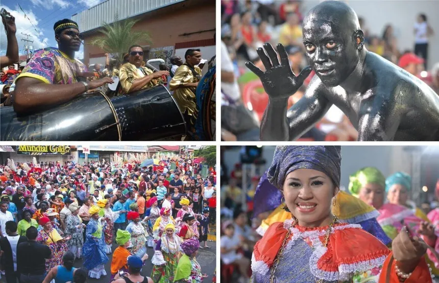
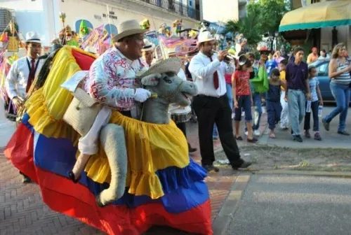
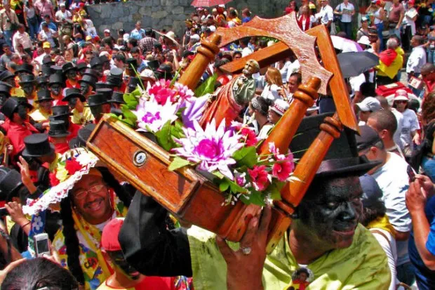

El estado Bolívar es una región rica en cultura y tradiciones que reflejan la diversidad de su gente y su historia. A lo largo del año, se celebran numerosas fiestas que combinan elementos religiosos, folclóricos y populares. A continuación, te presentamos algunas de las festividades más importantes de la región:
Considerado Patrimonio Cultural de Venezuela, se celebra en el estado Bolívar y es conocido por sus desfiles y ritmos vibrantes.
La más popular en Ciudad Bolívar, la capital del estado, y se celebra con procesiones, música y bailes típicos.
Se celebra el 29 de junio en la parroquia Bolívar de Araira, Municipio Zamora de Guatire, Edo. Bolívar.
